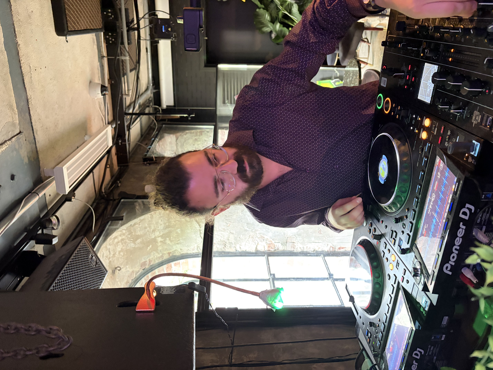
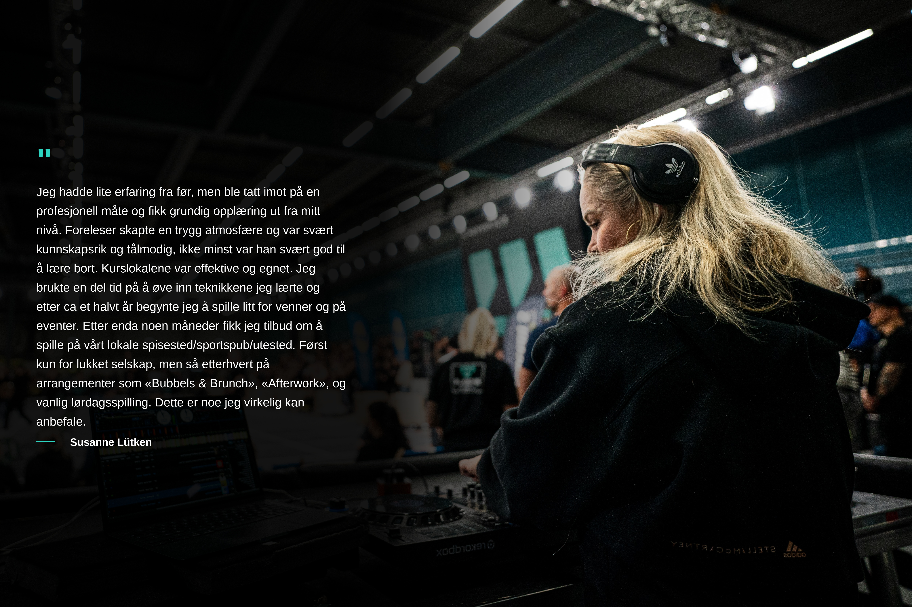

Om Lydbar
Som kursleder handler det ikke bare om å lære deg å mixe to låter sammen – jeg vil at du skal forstå hvorfor det fungerer, sånn at du kan fortsette å utvikle deg lenge etter at kurset er over. Derfor deler jeg alt jeg kan, fra de grunnleggende utstyrsvalgene til mer avanserte teknikker, for at du skal finne din egen stil – ikke bare kopiere min.
Gruppene jeg underviser er små med vilje. Det betyr at du faktisk blir sett gjennom hele kursdagen, får svar der og da, og slipper å vente i kø for å prøve utstyret. Og kontakten stopper ikke når kurset er ferdig – du kan ta kontakt med meg i etterkant også, enten du sitter fast på en teknikk, lurer på utstyr, eller bare vil dele hva du har fått til.
Kursleder og kursholder

Hva våre elever sier
Susanne Lütken
Gruppekurs student
"Jeg hadde lite erfaring fra før, men ble tatt imot på en profesjonell måte og fikk grundig opplæring ut fra mitt nivå. Foreleser skapte en trygg atmosfære og var svært kunnskapsrik og målmodig, ikke minst var han svært god til å lære bort."
"Kurslokalene var effektive og egnet. Jeg brukte en del tid på å øve inn teknikkene jeg lærte og etter ca et halvt år begynter jeg å spille litt for venner og på eventer. Etter enda noen måneder fikk jeg tilbud om å spille på vårt lokale spisested/sportspub/utested med arrangementer som «Bubbels & Brunch» og «Afterwork»."
Start reisen som DJ
Nybegynner kurs i DJing der du lærer å mikse fra bunnen av, i en liten gruppe og tett på med en erfaren DJ.
Reservér plass
Blogg
Kurs
Privatkurs for nybegynnere - Fysisk
Personlig opplæring tilpasset din nivå og tempo. Du får en-til-en undervisning i grunnleggende DJ-teknikker, beatmatching og utstyrsbruk. Gjennomført fysisk på vår lokasjon.
Gruppekurs for nybegynnere - Fysisk
Lær DJ-ing sammen med andre nybegynnere i en støttende og inspirerende miljø. Perfekt for å bygge selvtillit og få vennskap.
Hver tirsdag 17:15 - 18:30 • 5 samlinger • Plass til 6 elever
Sted: Øvingshotellet, Trondheimsveien 2, bygg H, Oslo
Starter januar 2027 - 3990 kr
5 tips til å bli en bedre DJ
Oppdatert: 22.08.2026 | Lesetid: 8 min
Alle DJ-er - nybegynnere og erfarne - trenger nye ideer, impulser og erfaringer. I dette innlegget finner du 5 tips til hvordan forberede og spille inn DJ-miks, hvordan lære av andre DJ-er, hvordan og hvorfor telling av taktslag under beatmatching er viktig for dansegulvet, samt hvor viktig det er med planlegging av sjangere før spillejobben.
Spill inn og hør på egen DJ-miks
Nok et godt tips er å spille inn samt høre på egen DJ-miks. Det er spesielt viktig når du er nybegynner, slik at du kan høre dine egne feil, analysere hva du gjorde og finne ut av hvordan overgangen kunne vært løst bedre. For eksempel, om du hører at overgangen ble rotete (vokal spilte over vokal osv.), kan du neste gang bestemme deg for at overgang gjøres der det er færre instrumenter eller når vokalen slutter.
En annen grunn til å ta opp egen DJ-miks er at du kan bruke den som "demo" når du skal finne spillejobber. Du kan for eksempel sende miksen til arrangører av arrangementer, klubber osv. for å vise hva du kan. Det er likevel viktig at du tenker på hvem miksen skal sendes til. Er det en klubb som spiller house-musikk, bør miksen din også primært bestå av house-musikk. Er det et bryllup du skal spille i, bør miksen inneholde varierte sjangere og kjente låter som de fleste liker.
Hold det enkelt
Som nybegynner kan det være lett å overdrive med effekter og hot-cues (snarveier til deler av en låt). Prøv å holde det enkelt de første månedene: fokuser på å få til gode overganger fremfor å bruke masse effekter. For mye bruk av effekter kan fort høres rotete ut og ødelegge flyten i musikken og dermed ødelegge stemningen på dansegulvet.
Hør på andre DJ-er
Når du hører på andre DJ-er - enten det er på nett eller på en klubb - så lærer du også mye selv. Du kan blant annet høre hvilke låter som spilles, hvilke sjangere de blander sammen, hvordan de bygger opp stemningen (energien), hvordan de gjør overganger og hvordan de leser dansegulvet. Det kan også være lurt å se på DJ-videoer på YouTube for å lære nye teknikker, som for eksempel «3 deck mixing» (spille med tre spillere samtidig) eller hvordan man bruker effekter på en god måte.
Lær deg musikkteori (og å telle)
Musikk består av taktslag (beats), takter (bars) og fraser (phrases). For å kunne beatmatche (få to låter til å gå i samme takt) må du kunne telle taktslag. De fleste sjangere innen elektronisk musikk (og pop, rock med mer) har fire taktslag i en takt (4/4 takt). Det betyr at du teller: 1, 2, 3, 4, og så begynner du på 1 igjen.
En frase består som regel av 4, 8, 16 eller 32 takter. Det er i starten av en ny frase at det skjer endringer i låten (for eksempel at trommene kommer inn, vokalen starter med mer). Det er her du bør starte overgangen til neste låt, slik at overgangen høres naturlig ut.
Planlegg spillelisten din
Før du drar på en spillejobb, er det viktig å ha en plan for musikken som skal spilles. Du bør ha en oversikt over hvilke sjangere du skal spille, hvilke låter som passer sammen, og i hvilken rekkefølge du tenker å spille dem. Selvsagt må man tilpasse seg publikum, men å ha en rød tråd gjør at du føler deg tryggere underveis.
I starten kan det være lurt å lage en spilleliste som er litt lengre enn selve spillejobben, slik at du har nok låter å velge mellom dersom du må endre retning. Du kan også organisere spillelisten etter tempo (BPM) eller energinivå, slik at det blir lettere å finne låter som passer sammen.
Oppsummering
Å bli en flink og god DJ krever mye øving, tålmodighet og vilje til å lære. Ved å følge disse tipsene vil du gradvis bygge opp selvtillit og tekniske ferdigheter, uansett om målet ditt er å spille på store klubber eller bare ha det gøy hjemme.
Hvordan finne DJ-musikk
Oppdatert: 15.01.2025 | Lesetid: 7 min
DJ-musikk: Hvordan finner man den? Det finnes flere ulike måter å utforske musikk på, og som DJ trenger man en stor spilleliste som kan passe til ens egen stil. Innlegget handler om hvor og hva man bør se etter når man søker etter ny DJ-musikk til spillelisten sin, og hvilke løsninger som kan bidra til en enklere søkeprosess.
Hvor finner man DJ-musikk?
Det finnes i hovedsak to måter å skaffe seg DJ-musikk på:
- Strømmetjenester
- Nedlasting / kjøp av musikk
Strømmetjenester for DJ-er
Mange DJ-programmer (som Rekordbox, Serato, Traktor med flere) har integrerte strømmetjenester. Dette gjør at du kan spille musikk direkte fra internett, uten å måtte laste ned filene først. Fordelen er at du får tilgang til millioner av låter umiddelbart, og slipper å bruke mye lagringsplass på datamaskinen din.
Noen av de mest populære strømmetjenestene for DJ-er er:
- Beatport Streaming: Spesielt godt egnet for elektronisk klubbmusikk (house, techno, drum & bass osv.).
- Beatsource Streaming: Fokusert på mer kommersiell musikk (pop, hip-hop, latin, r&b).
- Tidal: Har et enormt musikkbibliotek og god lydkvalitet.
- SoundCloud Go+: Populært for å finne remikser og uavhengig musikk.
Ulempen med strømming er at du er avhengig av en stabil internettforbindelse under spillingen. Går internett ned, stopper musikken – og det vil man helst unngå på en profesjonell spillejobb.
Laste ned og kjøpe DJ-musikk
Det tryggeste alternativet – og det de aller fleste profesjonelle DJ-er foretrekker – er å kjøpe og laste ned musikken som lydfiler (MP3, WAV eller AIFF). Da eier du filene selv, og du er helt uavhengig av internett når du står på scenen.
Hvor kan du kjøpe og laste ned musikk?
- Beatport: Verdens største nettsted for elektronisk musikk.
- Bandcamp: Her går en stor andel av inntektene direkte til artistene selv.
- Traxsource: Fokusert på house og deep house.
- iTunes Store: Godt egnet for kommersiell pop, rock og topp 40.
- DJ Pools: Abonnementsbaserte tjenester som BPM Supreme, DJcity og Franchise Record Pool.
Viktigheten av god lydkvalitet
Uansett hvor du skaffer musikken din fra, må du passe på kvaliteten på lydfilene. På et stort anlegg vil dårlig lydkvalitet raskt avsløres. Når du laster ned MP3-filer, bør du alltid velge 320 kbps, som er den høyeste kvaliteten for dette formatet.
Slik oppdager du ny musikk
- Følg favorittartistene dine på sosiale medier
- Hør på podcaster og DJ-sett fra andre profilerte DJ-er
- Sjekk listene ("Top 100") på Beatport og Traxsource
- Utforsk algoritme-baserte spillelister som Spotifys "Release Radar"
Når musikken er på plass – ta vare på den
Til minnepenn anbefaler jeg på det sterkeste Corsair Survivor, som i 32 GB-versjon gir deg god plass til spillelistene dine og solid, robust kapsling som tåler å falle i gulvet.
Hvordan leser man dansegulvet
Oppdatert: 10.01.2026 | Lesetid: 6 min
En viktig del av DJ-yrket er å kunne lese dansegulvet. En god DJ tilpasser musikken slik at gjester blir fornøyde med musikken.
Ikke let så lenge etter en låt
For å kunne tilpasse musikken til publikum må man først og fremst sørge for å ha en stor samling av låter - med ulike sjangre, rytmer og energinivåer - som kan appellere til det publikummet som kommer på dansegulvet. Som allround-DJ har man naturligvis et bredt publikum.
Uansett om man er allround-DJ eller ikke, er det like viktig at musikksamlingen er godt organisert i mapper og undermapper, slik at man bruker minst mulig tid på å lete etter spesifikke låter med spesifikke karakterer på spillejobber. Det gir mer tid til å lese dansegulvet.
Start forsiktig
Først og fremst, spill låter med lav bpm (tempo) og bygg opp til et høyere tempo utover spillingen. Dette er viktig om man er den første DJ-en som spiller den dagen, og som derfor må bygge opp energien (stemningen) gradvis.
Om man tar over for en warm-up DJ er publikumet forhåpentligvis allerede varmet opp, men pass på å fortsette den gradvise økningen av tempo som warm-up DJ-en har jobbet så lenge med, slik at stemningen på dansegulvet ikke går ned. Om man går fra 123 til 130 BPM på kort tid, og i tillegg skifter rytme eller sjanger, så vil publikum føle usikkerhet og potensielt forlate dansegulvet.
Tenk positivt
DJ-ens tanker og energi kan overføres til publikumet, og det påvirker publikums humør og lyst til å danse. Ta det derfor med ro om du ser at ingen danser. Det kan være et tegn på at publikum ikke er klar for sjangeren, tempoet eller rytmen som presenteres.
DJ som føler seg usikker fører raskt til bytting av sjanger, tempo eller rytme, og det kan oppleves som uprofesjonelt. Usikkerheten blir veldig lett overført til publikumet. Holder man seg rolig vil man kunne tenke klart og derfor ta bedre valg.
Spill ønskelåter
Ta gjerne imot ønskelåter, men la det ikke gå utover planlagte låter og energinivåer. Man skal tenke på å gradvis øke tempo, og gradvis senke det, men om ønskelåten spilles i feil energinivå så vil det forstyrre danseflyten på dansegulvet.
Å ta imot ønskelåter vil gjøre den som spør fornøyd, men det kan gi en pekepinn på hvilken retning man kan gå i når det kommer til musikkvalg.
Spill så ofte som mulig
Som nybegynner bør man spille ofte og regelmessig, om man har mulighet til det, slik at man lærer hva som fungerer og ikke. Det anbefales for alle DJ-er i alle nivåer å spille inn den musikken man har spilt på spillejobben, for da kan man i etterkant høre på miksen og notere ned hva som kunne vært bedre.
Hvordan organisere musikk som DJ
Oppdatert: 05.01.2026 | Lesetid: 7 min
Hvordan organisere musikk som DJ? Det finnes mange måter å organisere musikk på; den beste måten er den som gir deg en rask og enkel oversikt over samlingen din.
Etabler mapper basert på sjanger
Først og fremst, rydd og sorter musikksamlingen din etter de sjangrene du oftest spiller, som for eksempel House, Techno, Pop, Disco, Rock, R&B, Rap med mer. Mange foretrekker også å opprette mapper som også representerer tidsperioder, som 80s, 90s, 2000s, eller sjangere med høyt og lavt energinivå.
Har du mye musikk, kan det være hensiktsmessig å dele opp en sjanger-mappe (f.eks. House) i flere undermapper (som f.eks. Deep House, Tech House osv.) og dermed rydde mer i samlingen din.
Bruk stjernemerker og farger
Et annet lurt tips er å ta i bruk stjernemerker eller fargekoding for å identifisere ulike egenskaper ved låtene. For eksempel kan du bruke fargekoding som indikerer energinivå: grønn for lav energi (perfekt for oppvarming), gul for middels energi og rød for høy energi.
Stjernemerking kan også brukes, der 1 stjerne betyr lav energi og 5 stjerner betyr høyest energi. Det vil gjøre det raskt og enkelt å navigere og finne låter basert på energinivå.
Vær forsiktig med "All" mappen og dubletter
Du bør unngå å beholde dubletter (to helt like lydfiler av samme låt) i musikksamlingen din, fordi dette tar unødvendig lagringsplass og kan skape forvirring når du søker etter låter under en spillejobb.
Det anbefales også å unngå å spille fra en kjempestor "alle låter"-mappe. Sorter heller låtene i mer spesifikke spillelister. Det gjør at du finner fram mye raskere når du skal spille.
Oppsummering
Organisering av musikken krever tålmodighet, spesielt om du har mange låter i samlingen din fra før og må rydde i disse. Men det er en investering som vil gjøre det mye enklere å navigere i biblioteket og gi deg mer trygghet under spillingen. Start med det grunnleggende som sjanger og energinivå (farger/stjerner), så vil du merke forskjellen allerede på din neste spillejobb.
Hva trenger man til DJ-ing
Oppdatert: 01.01.2026 | Lesetid: 9 min
Hva trenger man til DJ-ing? Som nybegynner er det ofte best å velge en enkel DJ-kontroller/spiller fordi den har færre funksjoner, tar ikke mye plass, veier lite - som gjør det enkelt å ta den med seg på spillejobber - og tar mindre tid å lære.
Hodetelefoner
Når man skal velge hodetelefoner er det viktig å kunne høre lyden klart og tydelig, at de har god støyisolering slik at de stenger ute uønsket støy fra omgivelsene, og at de er komfortable å ha på seg over lengre tid. Noen kjente og gode hodetelefoner er Pioneer HDJ-X5 og Sennheiser HD 25.
Hva og hvor mye utstyr trenger man som DJ?
Det varierer veldig etter hva slags DJ du ønsker å være. Som mobil-DJ, altså en DJ som reiser rundt og tar spillejobber i bryllup, bursdager, konfirmasjoner, firmafester, julebord, med mer, må man ofte ha med seg eget lyd- og lysutstyr, i tillegg til DJ-utstyret. Det kan fort bli en stor investering og krever mye planlegging samt tid til opprigg og nedrigg på spillestedet.
Som klubb-DJ derimot, slipper du ofte å tenke på alt dette, fordi klubbene som regel har eget lydanlegg, lysanlegg og profesjonelt DJ-utstyr (som for eksempel Pioneer CDJ-spillere og mikser) fast installert på scenen. Du trenger da vanligvis kun å ha med deg en minnepenn med ferdiganalysert musikk samt egne hodetelefoner.
Anbefalt DJ-kontroller for nybegynnere
Det finnes i dag et stort utvalg av DJ-kontrollere tilpasset nybegynnere. En av de mest populære og anbefalte modellene er Pioneer DDJ-FLX4.
Dette er en svært allsidig, kompakt og brukervennlig 2-kanals kontroller som støtter både Rekordbox og Serato DJ Lite – to av de mest brukte programmene i bransjen. Den har et oppsett som minner om det profesjonelle klubbutstyret fra Pioneer, noe som gjør det lettere å gå over til klubbspillere senere om du ønsker det. I tillegg kan den kobles direkte til både PC, Mac, iPad og mobiltelefoner, og den strømdrives via USB-kabel.
Bærbar datamaskin
Du trenger også en bærbar datamaskin (laptop) som du kobler til DJ-kontrolleren din for å laste inn musikken og kjøre DJ-programvaren. Det stilles i dag ikke like strenge krav til spesifikasjoner på datamaskiner som tidligere, men du bør likevel sørge for å ha en relativt ny modell med god prosessor og nok RAM (minst 8 GB, men gjerne 16 GB).
Både Windows-maskiner og Mac fungerer utmerket til formålet, men mange musikere og DJ-er foretrekker Mac på grunn av stabiliteten til macOS-systemet.
Høyttalere og kabler
For å kunne høre musikken du mikser når du øver hjemme, trenger du et par høyttalere (såkalte monitorer). For nybegynnere kan det være lurt å starte med et par aktive monitorer (høyttalere med innebygd forsterker), for da slipper du å kjøpe ekstern forsterker. Noen gode alternativer er Pioneer DM-40D, KRK Rokit RP5 eller Yamaha HS5.
Du må også ha riktige kabler for å koble utstyret sammen. Som regel følger de viktigste kablene med når du kjøper DJ-kontroller og høyttalere, men du bør alltid ha noen ekstra kabler liggende, som f.eks. RCA-kabler og minijack-kabler, i tilfelle noe skulle slutte å fungere underveis.
Oppsummering
Å starte som DJ trenger ikke å koste en formue. Med en god nybegynner-kontroller som Pioneer DDJ-FLX4, en stabil laptop, et par gode hodetelefoner og noen enkle høyttalere har du alt du trenger for å komme i gang med å mikse musikk og lære faget.
Hvordan får man spillejobber
Oppdatert: 20.12.2025 | Lesetid: 8 min
Hvordan får man spillejobber? Å få dine første DJ-jobb krever strategi, nettverksbygging og dedikasjon.
DJ-navn og Google
Et fengende og unikt DJ-navn gjør det lettere å bli lagt merke til, og forhåpentligvis også husket i lang tid. Et lurt triks er å bruke ordet "DJ" i DJ-navnet, fordi når man søker etter DJ-er så vil man mest sannsynlig skrive "DJ" i søkefrasen i Google. Om du heter f.eks. "DJ Dejan", så vil Google lettere fange opp dette og vise nettsiden din eller profilen din på sosiale medier til de som søker.
Etabler nettside og sosiale medier
For å få spillejobber bør du være synlig på nett og sosiale medier, som Instagram, Facebook, TikTok med mer. Du kan for eksempel opprette en egen profil på sosiale medier der du legger ut bilder og videoer fra arrangementer du har spilt på, eller små videoer der du mikser musikk hjemme.
Det er også en fordel å ha en profesjonell nettside der du viser fram hvem du er, hva du kan tilby, referanser fra tidligere kunder samt kontaktinformasjon, slik at potensielle kunder kan ta kontakt med deg for spillejobber. Du kan bruke gratisverktøy som f.eks. Wix eller WordPress for å rulle ut nettsiden din.
Bruk nettverket ditt
Spør venner, familie og bekjente om de vet om noen som trenger en DJ til f.eks. en bursdag, bryllup, firmafest med mer. Det er en av de beste måtene å få sine første spillejobber på, fordi folk stoler mer på anbefalinger fra folk de kjenner.
Du kan også ta kontakt med lokale barer, utesteder, klubber, eventbyråer med mer og fortelle hvem du er og hva du gjør. Ta gjerne med deg en minnepenn med en DJ-miks du har spilt inn, slik at de kan høre på hva du kan levere. Det viser initiativ og engasjement, og kan fort føre til en spillejobb.
Registrer deg på portaler
Det finnes flere nettsider og portaler der du kan registrere deg som DJ og motta forespørsler om spillejobber. Eksempler på slike portaler i Norge er "Musikkformidling.no" og "Mittanbud.no". Her kan kunder legge ut oppdrag de trenger DJ til, og du kan gi tilbud på oppdraget. Det kan være en god måte å få spillejobber på, spesielt i starten når du ikke har et stort nettverk eller en etablert kundebase fra før.
Oppsummering
Å få spillejobber handler mye om å være synlig, aktiv og profesjonell i alt du gjør. Ved å ha et godt og Google-vennlig DJ-navn, en ryddig nettside samt profiler på sosiale medier, bruke nettverket ditt og registrere deg på relevante portaler, vil du øke sjansene dine betraktelig for å få flere spillejobber. Vær tålmodig og stå på, så vil resultatene komme etter hvert.
Tre tips til din DJ mix
Oppdatert: 15.12.2025 | Lesetid: 5 min
3 tips til din DJ miks - En DJ miks er en flott måte å vise andre hvordan du er som DJ. Her viser jeg deg tre tips til hva som er viktig å tenke på, samt hvilket DJ program du kan bruke, før du begynner å spille inn egen DJ-miks.
Hvem spiller du til?
DJ-miks er veien din til spillejobben du ønsker deg. Du må derfor vite hvem du spiller til, slik at du kan velge låter som passer til den anledningen. Er det for et bryllup, bør du tenke på at det kommer gjester i ulike aldre, og at musikken derfor bør være variert med kjente låter. Er det for en nattklubb, bør du derimot fokusere på en spesifikk sjanger (f.eks. house) og bygge opp energien slik at folk danser.
Hold det enkelt
Som nybegynner bør du unngå å gjøre miksen for komplisert. Enkelte DJ-er kan tro at en god miks må inneholde mange lydeffekter, raske skifter av låter og avanserte teknikker. Det stemmer ofte ikke. Det beste er ofte å holde det enkelt og fokusere på å gjøre gode og flytende overganger, der låtene passer sammen rytmemessig (beatmatching) og har et naturlig energinivå. For mye lydeffekter kan gjøre miksen rotete og slitsom å høre på.
Riktig programvare
For å spille inn en DJ-miks trenger du en stabil og god programvare. De fleste DJ-kontrollere kommer i dag med en gratisversjon av Rekordbox eller Serato, og begge disse programmene har en innebygd opptaksfunksjon. Det betyr at du enkelt kan ta opp miksen din mens du spiller, og lagre den som en lydfil (f.eks. MP3 eller WAV) på datamaskinen din.
Kontakt
Har du spørsmål eller ønsker mer informasjon?
Velkommen til din profil
Logg inn eller registrer deg for å se dine kjøpte kurs og video-materialer